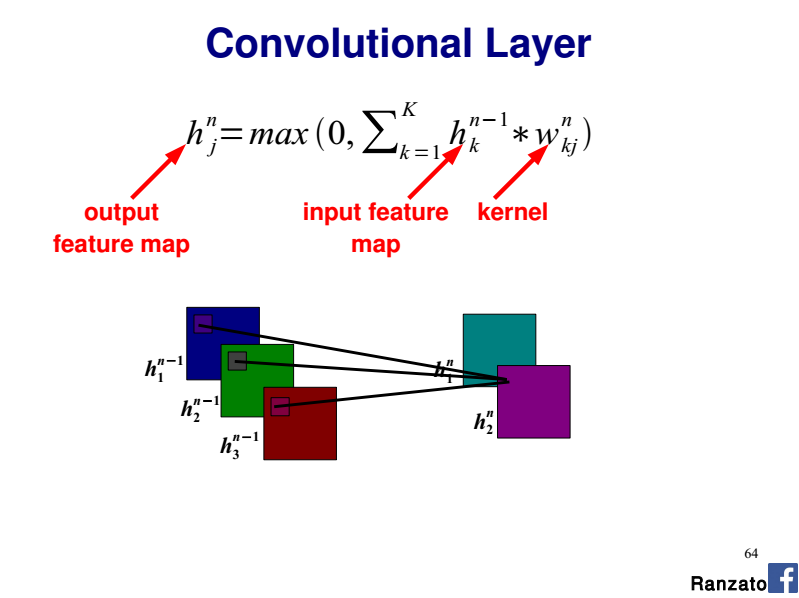
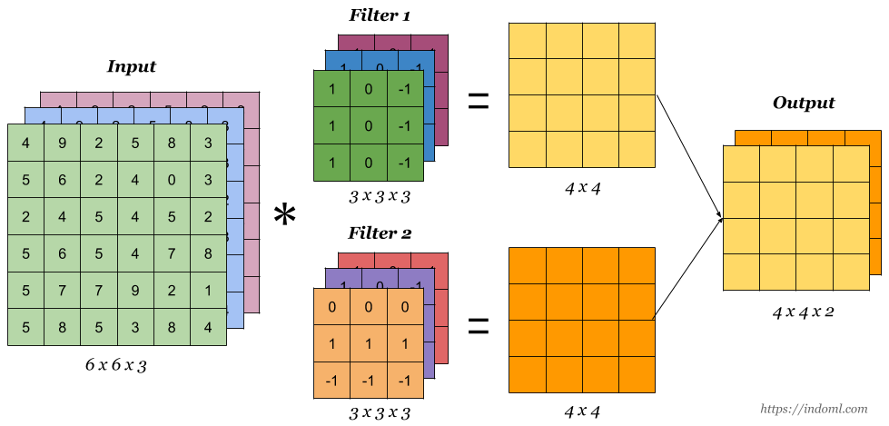

Convolutional Neural Networks - Multiple Channels
How is the convolution operation carried out when multiple channels are present at the input layer? (e.g. RGB)
After doing some reading on the architecture/implementation of a CNN I understand that each neuron in a feature map references NxM pixels of an image as defined by the kernel size. Each pixel is then factored by the feature maps learned NxM weight set (the kernel/filter), summed, and input into an activation function. For a simple grey scale image, I imagine the operation would be something adhere to the following pseudo code:
for i in range(0, image_width-kernel_width+1): for j in range(0, image_height-kernel_height+1): for x in range(0, kernel_width): for y in range(0, kernel_height): sum += kernel[x,y] * image[i+x,j+y] feature_map[i,j] = act_func(sum) sum = 0.0
However I don't understand how to extend this model to handle multiple channels. Are three separate weight sets required per feature map, shared between each colour?
Referencing this tutorial's 'Shared Weights' section: http://deeplearning.net/tutorial/lenet.html Each neuron in a feature map references layer m-1 with colours being referenced from separate neurons. I don't understand the relationship they are expressing here. Are the neurons kernels or pixels and why do they reference separate parts of the image?
Based on my example, it would seem that a single neurons kernel is exclusive to a particular region in an image. Why have they split the RGB component over several regions?
Answer
How is the convolution operation carried out when multiple channels are present at the input layer? (e.g. RGB)
In such a case you have one 2D kernel per input channel (a.k.a plane).
So you perform each convolution (2D Input, 2D kernel) separately and you sum the contributions which gives the final output feature map.
Please refer to the slide 64 of this CVPR 2014 tutorial by Marc'Aurelio Ranzato:

Are three separate weight sets required per feature map, shared between each colour?
If you consider a given output feature map, you have 3 x 2D kernels (i.e one kernel per input channel). Each 2D kernel shares the same weights along the whole input channel (R, G, or B here).
So the whole convolutional layer is a 4D-tensor (nb. input planes x nb. output planes x kernel width x kernel height).
Why have they split the RGB component over several regions?
As detailed above think of each R, G and B channel as a separate input plane with its dedicated 2D kernel.
Suggest
For example, if your input image is of size W x H x C where W, H, and C
represent the length of width, height, and the size of channels. The dimension
of the filter (aka kernel) would be K x K x C where K denotes the length of
the dimension of the kernel. Using max to aggregate the results of different
channels fails to distinguish the nuances across channels, which is not what
we want. As illustrated in the figure below (source), the input data is of
size 6 x 6 x 3. The number of units (filters) is 2, each of which has the
dimensions 3 x 3 x 3. The output is 4 x 4 x 2. So in general channels need to
be treated separately under each filter.
